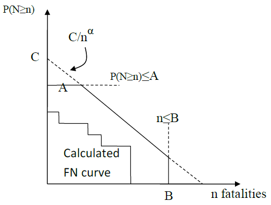
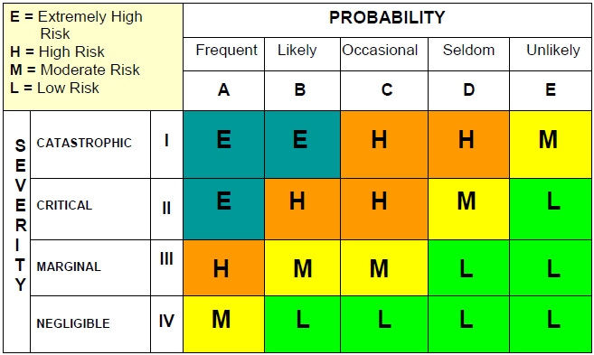
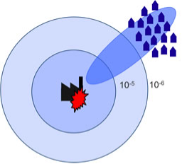
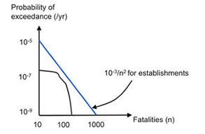
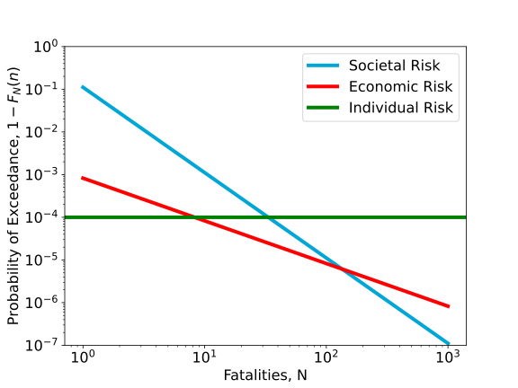

Safety Standards#
Note
This note has been updated on Friday, January 17, 2024. It previously said that you did not need to know the content on this page, however, it was not true (and conflicted with the front page of this chapter). While you don’t need to memorize everything, you are expected to understand the concept of a limit line and how to interpret it (i.e., section Limits for Individual and Societal Risk). If you are unsure of what this means, review WS 2.8, which will illustrate the scope that you are expected to understand.
When answering the question “how safe is safe enough” a merely economic treatment with cost benefit analysis or economic optimization is often not sufficient for activities with risks to people. Therefore, criteria have been developed that focus on risks to human life. This section focuses on safety standards and criteria for evaluating the risk to life.
Two aspects are typically considered when evaluating and regulating risks to the public: the total or population-wide effects, and the distribution of effects within the affected population. Table 8.5 summarizes these perspectives. The societal perspective is concerned with ‘total effect’ and the effects of large-scale accidents on the society, in terms of economic damages and life loss. The individual perspective is concerned with distributive justice (‘equity’), i.e. the distribution of harm over the population.
As risk is often the by-product of an otherwise legitimate and advantageous activity, such as production or transportation, regulating risks is essentially a balancing act between economic and social activities on the hand and a sufficiently safe society on the other hand (e.g. Jongejan (2008)): just as too lenient regulations are suboptimal, too stringent ones are too.
Aspect |
Relevant risk metric |
Rationale |
|---|---|---|
Equity (‘distributive justice’) |
Individual risk |
Regulation is to prevent that individuals are exposed to disproportionally large risks |
Total effect |
Societal and economic risk |
Regulation is to limit large-scale accidents and optimize the costs and benefits of risk reduction |
Three Types of Risk#
Based on the general concepts described above, it has been proposed to evaluate risks based on three criteria ((TAW, 1985, Vrijling et al., 1995, Vrijling et al., 1998)):
limit the invidual risk to prevent that certain people are exposed to disproportionally large risks;
limit the societal risk to limit the risks of large scale accidents with many fatalities;
Economic optimization to balance investments in risk reduction from an economic point of view.
Societal and Economic Risk#
Two of these criteria have already been discussed elsewhere in this book. Societal risk refers to the probability of an accident with multiple fatalities and is often graphically represented by an FN-curve (Risk Curve Section). Economic optimization has already been discussed in the Economic Optimization Section.
Individual Risk#
Individual risk concerns the probability of death of a person due to an accident. Various related definitions exist. The “average individual risk” for a certain activity can be calculated, e.g. the individual risk due to smoking or the risk of an airplane crash for a frequent flyer. Table 8.6 compares the probability of various types of fatal accidents.
Activity |
Probability (per year) |
|---|---|
Mountain climbing |
\(10^{-2}\) |
Traffic (young men) |
\(10^{-4}\) |
Accidents at home |
\(10^{-4}\) |
Structural failures |
\(10^{-7}\) |
The individual risk due to an accident can be calculated with:
where:
\(IR\) the individual risk [1/year]
\(P_{f}\) the probability of an accident [1/year]
\(P_{d|f}\) the conditional probability of death given an accident
Both the individual risk and \(P_{d|f}\) can be formulated as a function of a location near a risk source. If it is assumed that a person is permanently present at that location, the individual risk becomes a property of that location and it can be used for zoning and land use planning. This is applied in the industrial safety policy in the Netherlands (see next section).
Example: Difference between individual and societal risk.
To illustrate the difference between the individual and societal perspective, consider a fairly safe car that has a probability of 10\(^{-5}\) per year of causing a fatality due to technical failure. This may well be acceptable to an individual. Such a probability is in the same range as the average death rate in traffic (650 fatalities / 17 million people which is about 4.10\(^{-5}\) per year). If only 1000 cars are sold in the Netherlands, the number of fatal accidents with this car is rare, i.e. 0.01 fatalities per year. However, when the car becomes popular and 10 million cars are sold, the average number of fatalities due to technical failure becomes 100 per year. This may well lead to public concerns and indignation. From a societal point of view this may no longer be acceptable, whereas the individual risk has not changed.
Limits for Individual and Societal Risk#
Safety standards can be used to set limits to the individual and societal risk. A limit value can be set for individual risks. Such a limit value is to avoid disproportionate exposures by laying down a minimum safety level for all individuals. In various fields of applications limit values in the range of 10\(^{-4}\) to 10\(^{-6}\) per year are used (see below for more information). To put the stringency of the individual risk criteria into perspective, one could consider the effect of the probability of an accident on life expectancy. When an average person would be constantly exposed to a maximum allowable level of risk of 10-6 per year, the decrease of his or her life expectancy would be only 1 day as shown in Table 8.7.
Additional probability of death in a year |
Life expectancy in years |
Decrease of life expectancy in years |
Decrease of life expectancy in days |
|---|---|---|---|
\(10^{-3}\) |
74.97 |
3.16 |
1153 |
\(10^{-4}\) |
77.81 |
0.32 |
117 |
\(10^{-5}\) |
78.10 |
0.03 |
11 |
\(10^{-6}\) |
78.13 |
0.00 |
1 |
\(10^{-7}\) |
78.13 |
0.00 |
0 |
Societal risk can be evaluated by means of an FN limit line. The calculated FN curve of the system should, in principle, not exceed the limit line. An FN-criterion is defined by three variables: (1) its base point (the exceedance probability of 1 fatality, i.e. C), (2) its slope (\(\alpha\)), and (3) its probability and/or consequence cut-off (\(A\) and \(B\)). Fig. 8.19 shows the different constraints that could make up an FN limit line.
{kind=link}

Fig. 8.19 Schematic FN curve illustrating limit line formulation.#
The general formulation for such a limit line without horizontal of vertical cut-off equals:
where:
\(C\) a constant that determines the vertical position of the limit line
\(\alpha\) a coefficient that determines the steepness of the limit line
The limit line is called risk neutral1 if \(\alpha=1\), since it places equal weight on exceedance probabilities and numbers of fatalities. If \(\alpha = 2\), the limit is risk averse. This means that that the exceedance probability of 10 times as many fatalities should be 100 times lower. This has been motivated by public aversion to large numbers of fatalities. For example, the loss of 1000 people in one accident (e.g. a major explosion) could be valued differently than 1000 losses of 1 person in separate accidents (e.g. in traffic).
For different applications limit lines have been developed with varying constants and steepness. Examples of application areas include industrial risks in the Netherlands (next section), dams in the United States and Canada, and chemical risks in Hongkong and the UK (Jonkman et al., 2003).
Exaple: Risk Matrix
Risk matrices are often used in various industries for risk evaluation and decision support, for example, to quickly prioritize actions, especially in time-sensitive situations. For a given undesired event the extent of probability and consequences are estimated on a qualitative or semi-quantitative scale, see Fig. 8.20 for an example. Ranges of failure probabilities or consequences can be assigned to the qualitative terms on the axes in the example. The combination of probability and consequence determines the level of risk, and depending on the application, whether it is acceptable or whether it requires more attention and risk reduction efforts. However, unlike the FN curve, the cumulative effects of multiple possible events are generally not considered in a risk matrix.
{kind=link}

Fig. 8.20 Example of a risk matrix used by various engineering and military branches of the United States Army Corps of Engineers (Source: Corps Risk Management Center or Risk Analysis Gateway).#
Case Study: Industrial Hazards#
The Dutch major hazards policy deals with the risks to those living in the vicinity of major industrial hazards such as chemical plants and LPG-fuelling stations. The development of the Dutch major hazards policy was strongly incident driven, as were European efforts aimed at the prevention of major industrial accidents. After a number of severe industrial accidents, including the Bhopal accident in 1984 which killed an estimated 3000 people and severely injured over 200.000, a European directive was drafted concerning the prevention of major accidents: the 1982 Seveso Directive. This was later replaced by the Seveso II Directive. The cornerstones of the Dutch major hazards policy are a) the use of quantitative risk analysis (QRA); b) comparison of QRA outcomes with limits to individual and societal risks (Bottelberghs, 2000).
Within the Dutch major hazards policy, individual risk is defined as the probability of death of an average, unprotected person that is constantly present at a certain location. It is thereby a property of location and iso-risk contours can be plotted on a map (see Fig. 8.21). Individual risk is therefore also named local risk (“plaatsgebonden risico”) in the Netherlands. The shape of the risk contours for other applications will look different. For airports the contours will follow the shape of the runway and flight paths, for polders and flooding the risk contours will be highest in the deepest part of the polder.
{kind=link}

Fig. 8.21 Example of a schematic individual risk contour (circles) for a chemical installation.#
Individual (or local) risk criterion |
||
|---|---|---|
Existing situations |
Vulnerable |
\(10^{-6}\) per year |
Limitedly vulnerable |
\(10^{-5}\) per year, strive for \(10^{-6}\) per year |
|
New situations |
Vulnerable |
\(10^{-6}\) per year |
Limitedly Vulnerable |
\(10^{-6}\) per year |
A distinction is made between vulnerable objects such as schools and houses and limitedly vulnerable objects such as small offices. The following criteria apply. For new situations a limit of \(10^{-6}\) per year applies. A comparison with Table 8.8 shows that this individual risk value has a negligible effect on life expectancy.
The criterion for societal risk that is used in the Netherlands for evaluating the third party risks posed by major industrial hazards is shown in Fig. 8.22 below. It serves as a reference in the broader assessment of third party risks by competent authorities. Exceedances of the criterion line also have to be motivated by competent authorities. When the criterion line is not exceeded, the acceptability of the third party risk still has to be motivated. The limit line is characterized by \(C=10^{-3}\) and a steepness of \(\alpha = 2\), making it a risk averse criterion. The criterion is used to assess the acceptability of the risks of individual facilities.
{kind=link}

Fig. 8.22 FN limit line used for installations in the Netherlands#
Case Study: Flood Protection#
For systems for which no regulations are available the question ‘how safe is safe enough?’ can be difficult to resolve. A general model has been developed by the Technical Advice Committee for Water defences (TAW)2 in the process of deriving safety standards for flood protection in the Netherlands, which, in a formal sense, has been an ongoing process since the 1950’s. This approach is derived on the basis of accident statistics (TAW, 1985, Vrijling et al., 1995, Vrijling et al., 1998), where underlying assumption of the model is that accident statistics are the result of a process of societal optimisation and that they thereby reflect what is apparently considered acceptable by society at large. Such an approach is commonly referred to as a ‘revealed preference’ approach, and was already introduced in a a general sense in the Chapter on Risk Analysis, Section A Famous Risk Curve (Fig. 8.2).
Individual risk#
Accident statistics reveal that the extent to which participation in the activity is voluntary strongly influences the level of risk that is accepted by individuals. Relatively high individual risks are accepted for activities that are voluntary and have a (personal) benefit, such as mountain climbing. Much smaller individual risk values are accepted for involuntary activities for which the risks are imposed by others, e.g. for chemical and nuclear industry. A policy factor (\(\beta\)) is therefore introduced to account for voluntariness of exposure. This factor is set at \(\beta=1\) for an individual risk value of \(10^{-4}\) per year. This represents the “baseline” individual risk for the group young men3 who are most at risk of dying in a traffic accident.
Prob. of death(per year) |
Example/application |
\(\beta\) |
Voluntariness |
Benefit |
|---|---|---|---|---|
\(10^{-2}\) |
Mountain climbing |
100 |
Voluntary |
Direct benefit |
\(10^{-3}\) |
Driving a motor cycle |
10 |
Voluntary |
Direct benefit |
\(10^{-4}\) |
Driving a car |
1 |
Neutral |
Direct benefit |
\(10^{-5}\) |
Flooding |
0.1 |
Involuntary |
Some benefit |
\(10^{-6}\) |
Factory/LPG station |
0.01 |
Involuntary |
No benefit |
The proposed individual risk limit becomes:
An appropriate value for the policy factor \(\beta\) can be chosen depending on the characteristics of the activity. If the conditional probability of death due to an accident \(P(d|f)\) is known, the acceptable failure probability can be computed:
Note that the Dutch individual risk criterion for hazardous installations would be obtained for \(\beta = 0.01\) and a conditional probability of death of 1 (\(P_{d|f} = 1\)).
Societal risk#
The societal risk criterion proposed by the TAW is based on the thought that societal risk should be evaluated primarily at a national level as local developments may lead to a situation that is considered unacceptable by society as a whole (Vrijling et al., 1995). The societal risk criterion at a national scale proposed by the TAW is:
where:
\(E(N)\) the expected number of fatalities per year
\(k\) the risk aversion index (proposed value, \(k=3\))
\(\sigma(N)\) the standard deviation of the number of fatalities per year
\(\beta\) the policy factor
A risk aversion index \(k\) has been introduced to account for risk aversion. For accidents with small probabilities and large consequences the standard deviation \(\sigma(N)\) is large relative to \(E(N)\), see example below. The total risk takes a risk aversion index \(k\) [-] into account. For \(k>1\), the “cost of risk bearing” exceed expected loss, implying a risk averse attitude.
Expected value and standard deviation for two systems
We consider two systems
This system has a high failure probability of 0.01 per year and 1 fatality
The second system has a smaller failure probability of 0.0001 per year but a higher number of 100 fatalities.
For both systems a binomial distribution of the number of fatalities is applied meaning that the number of fatalities in case of failure is exactly known. The expected value and standard deviation of the number of fatalities are found as follows:
The resulting expected value and standard deviation are shown in Table 8.10 below. Although both systems have the same expected value, the standard deviation for the “small probability – large consequence” event for system 2 is higher. Taking into account the standard deviation in the TAW criterion thus accounts for risk aversion against accidents with large numbers of fatalities.
\(P_f\) |
\(N\) |
\(E(N)\) |
\(\sigma(N)\) |
|
|---|---|---|---|---|
1 |
\(10^{-2}\) |
1 |
\(10^{-2}\) |
0.0995 |
2 |
\(10^{-4}\) |
100 |
\(10^{-2}\) |
0.1000 |
The next step would be to distribute this maximum allowable level of societal risk over individual installations. After all, locally imposed societal risk criteria are necessary for achieving the desired national level of societal risk. The translation of the nationally acceptable level of risk to a criterion for a single local installation depends on the type of probability distribution of the number of fatalities. In Vrijling et al. (1998) a formulation of the risk acceptance at a local level is presented conform (8.14):️
For a binomial distribution this yields:
in which \(N_a\) is the number of independent locations where the activity takes place. This requirement corresponds to the requirement set for the chemical installations if \(\beta=0.03\), \(N_a=1000\) and \(k=3\).
Combination of Risk Types#
According to the approach by TAW the three approaches (individual, societal and economic risk) lead to three acceptable failure probabilities. The most stringent of the three criteria can be chosen to determine the acceptable probability of failure of the system and to make sure that all three conditions are fulfilled. This can best be illustrated with an example (see below). The principles of this approach have been applied to derive the proposed new safety standards for flood defences in the Netherland by the Deltaprogramma (2014).
Example: Combination of individual, societal and economic risk for a dike ring area
We consider application of the three criteria to the case of dike rings in the Netherlands. There are about 100 dike rings in the Netherlands of different sizes. A dike ring is a flood prone area protected from flooding by flood defences and high grounds. The conditional probability of death given flooding depends on the depth of the polder and flood characteristics. Research on loss of life due to floods shows that a conservative estimate would lead to \(P_{d|f} = 0.1\).
First, we consider the individual risk. A value of \(\beta = 0.1\) is proposed as being exposed is considered as an involuntary activity with some benefit (i.e. living in a prosperous delta). This leads to an acceptable individual risk value of \(10^{-5}\) per year. This limit has also been proposed by the Dutch government in the year 2014 (“basisveiligheid”). The acceptable flooding probability according to the individual risk becomes:
The societal risk criterion can be determined according to (8.14). Assuming a risk averse criterion \(\alpha=2\). We can determine the constant \(C\) of the limit line for \(N_a = 100\) installations and \(\beta=0.1\).
The limit line for societal risk becomes \(1 - F_N(n) \leq 0.11/n^2\). Both the individual and societal risk criteria are plotted below. As a third criterion the economic optimization can be added. The optimal or acceptable probability of failure depends on the damage and investment costs. A relationship with the graph below can be established by assuming that the number of fatalities is related to the economic damages. A dike ring with many inhabitants and potential fatalities will generally also represent a large economic value. For the sake of the example we assume that every fatality corresponds to an economic damage of €\(5 \cdot 10^7\) (note: this is not equal to the value of a human life). To calculate the economic optimum for the example we assume arbitrary values of \(r=0.025\) and €\(5 \cdot 10^6\) \(B=0.33\). Fig. 8.23 below shows the combination for the three criteria.
For a given number of fatalities in a dike ring the acceptable failure probability according to the three criteria can be derived. The individual risk criterion is independent on the number of fatalities. The economic criterion shows a linear relation between the failure probability and damage or number of fatalities. The societal criterion is risk averse so shows a decreasing quadratic relationship between acceptable failure probability and consequences.
For a given number of inhabitants and potential fatalities for a dike ring, the acceptable failure probability can be determined. For dike rings with between 1 and 10 fatalities – generally small areas-the individual risk criterion is the most stringent. For dike rings with large numbers of fatalities, the risk averse societal risk criterion becomes dominant.
Several extensions of this model are possible. One can consider to add the economic value of life loss or consider a different distribution of the nationally acceptable societal risk over dike rings with different sizes.
{kind=link}

Fig. 8.23 Combination of individual, societal and economic risk criteria for a hypothetical example.#
One field of application where these concepts have been applied concerns the flood protection standards in the Netherlands. Since 2017 new safety standards have been in place for primary flood defences in the Netherlands that have been derived based on a risk assessment, with standards been formulated as a (tolerable) probability of failure of the flood defences.
- 1
It should be noted that the usage of the term “risk neutral” to describe the FN-curve limit line for \(\alpha = 1\) is widespread but, strictly speaking, incorrect in the context of decision theory (see Decision Analysis Section). This is because the cost of risk bearing to a risk neutral decision maker equals expected loss (i.e. the product of probabilities and damages). The FN-curve shows cumulative probabilities, however. Also, an individual crossing of the limit line would not necessarily disturb a risk neutral decision maker, provided the other accident scenarios have relatively small probabilities.
- 2
TAW is nowadays called ENW: Extertise Network on Flood Protection.
- 3
The group ‘young men’ is used as a baseline because this was the only information available at the time the study was completed.